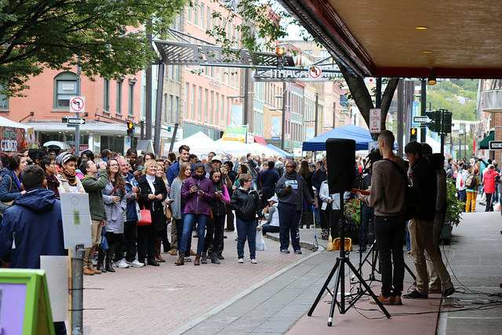

One of our Signature Attractions of the festival!
Each year the festival offers live music on the Main Stage in the Commons area. Concerts begin on Friday afternoon and are offered Saturday and Sunday. There is no cost to come and enjoy the bands selected and for the adults we offer a beer garden and the food vendors will be open as well. Bring your lawn chairs and families and enjoy the entertainment, music goes all day Saturday and Sunday from 10AM to 6PM.
